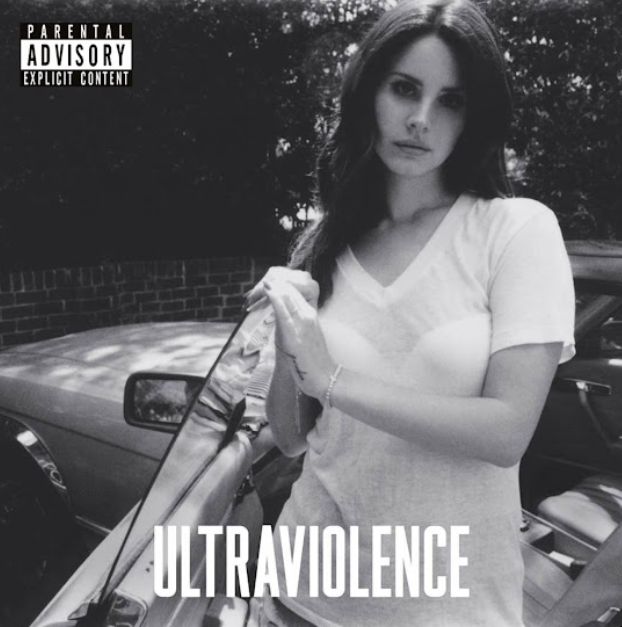

Alt-Rock / Indie
The Elliens
Атмосферне гітарне звучання та емоційна лірика. Хіти порталу: «Маріонетка», «Таблетки» та «Тримай мене».
Слухати треки
Атмосферне гітарне звучання та емоційна лірика. Хіти порталу: «Маріонетка», «Таблетки» та «Тримай мене».
Слухати треки
Глибокий бас, темна естетика та гіпнотичний вокал. Відома завдяки вірусним релізам BABYDOLL і TFMTYLM.
Слухати треки
Меланхолійні мелодії та щирі тексти для вечірніх прогулянок і спокійного настрою.
Слухати треки
Кінематографічний дрім-поп із вінтажним настроєм та впізнаваним вокалом.
Слухати трекиПоєднання поп-мелодики з похмурою електронікою, важкими басами та мінімалістичними аранжуваннями.
Незалежна рок-сцена з живими інструментами, щирим звучанням та нестандартними ритмами.
М'який, атмосферний стиль із реверберацією гітар і спокійним, занурюючим вокалом.